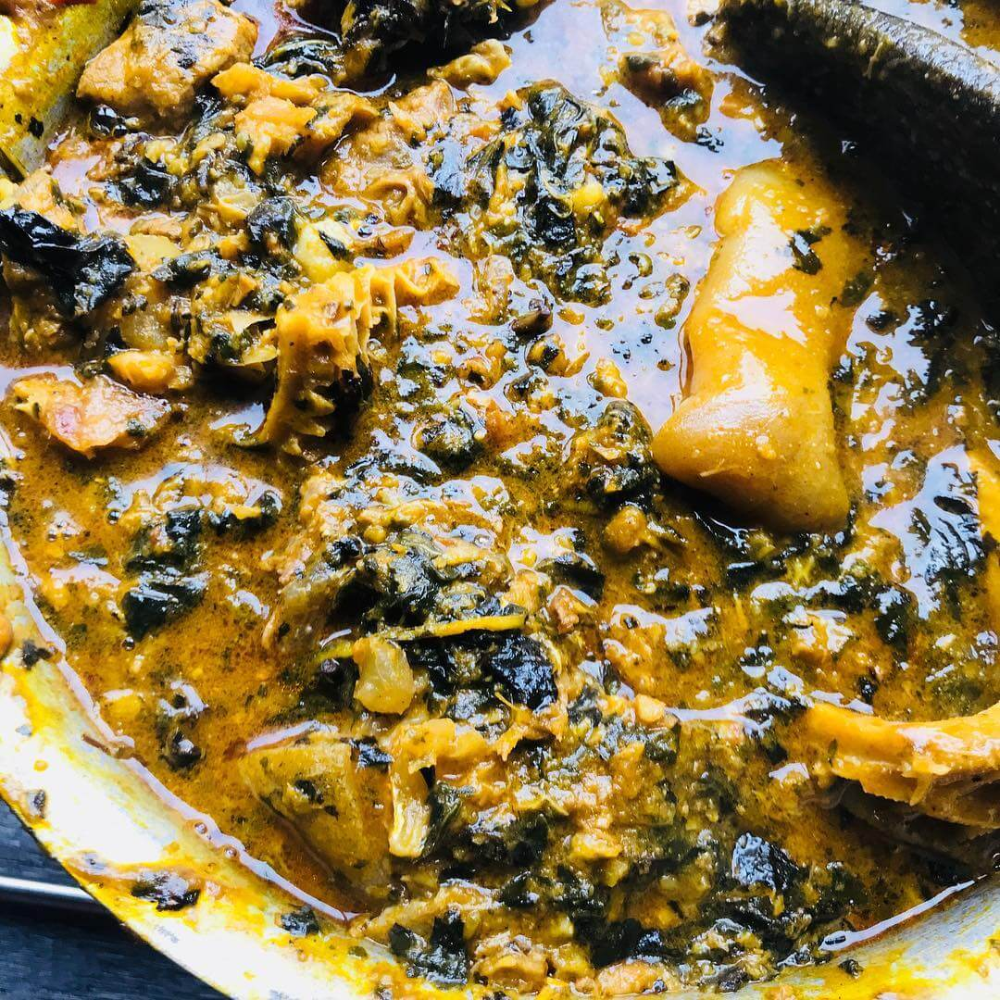

Bitterleaf Soup
Preparation Time: 1 hour 30 minutes
Ingredients:
- 2 cups washed bitter leaves
- 2 cups assorted meats (such as beef, goat meat, and cow tripe), cut into bite-sized pieces
- 1/2 cup dried fish, cleaned and deboned
- 2 tablespoons ground crayfish
- 1 onion, chopped
- 2 tablespoons palm oil
- 2 scotch bonnet peppers (atarodo), chopped
- 2 tablespoons ground uziza seeds (optional)
- Salt, to taste
Instructions:
- In a large pot, combine the assorted meats, dried fish, chopped onion, and ground crayfish. Add enough water to cover the ingredients and bring to a boil.
- Reduce the heat to low and simmer for about 45 minutes to 1 hour, or until the meats are tender.
- While the meats are cooking, prepare the bitter leaves by washing them thoroughly to remove the bitterness. You may need to wash them several times, changing the water each time.
- Once the meats are tender, add the washed bitter leaves to the pot and stir well to combine.
- Add the palm oil, chopped scotch bonnet peppers, and ground uziza seeds (if using) to the pot. Stir to combine.
- Allow the soup to simmer for another 15-20 minutes, stirring occasionally, until the bitter leaves are tender and the flavors are well combined.
- Taste the soup and adjust the seasoning with salt if necessary.
- Serve the Nigerian Beef Stew hot with rice, yam, or any preferred side dish.
- Serve the Bitter Leaf Soup hot with a side of pounded yam, fufu, or eba.
Fun Fact: Bitter Leaf Soup, also known as Ofe Onugbu, is a traditional Nigerian soup made with bitter leaves and assorted meats. It has a slightly bitter taste that is balanced by the rich flavors of the meats and spices.